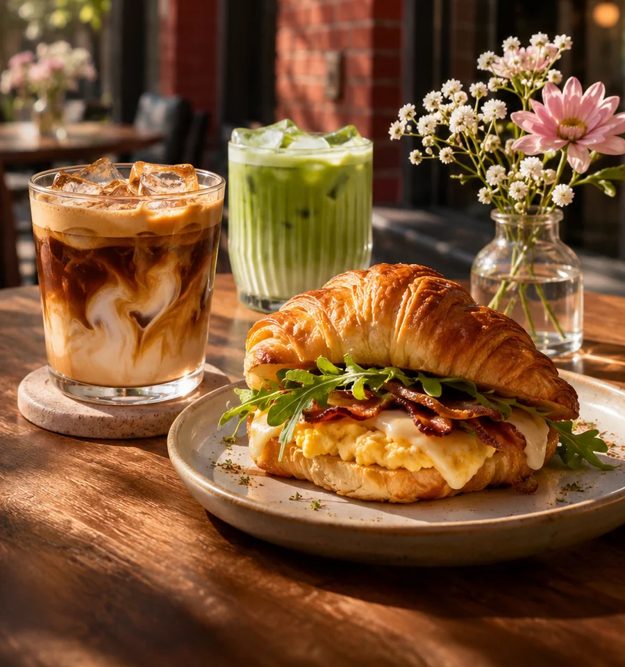

GOOD COFFEE✦GOOD COMPANY
GOOD TO SEE YOU
A little spot with a lot of heart.
Some mornings need a strong coffee. Other days call for a fresh smoothie, a generous breakfast, and a few minutes to yourself. We think there's room for all of it.
Find Jolt ’N Bolt on 18th Street in Washington, DC — around the corner from the everyday, with your next favorite bite waiting.
FRESH SIPS. HEARTY BITES. YOUR DAILY RITUAL.
Come say hello